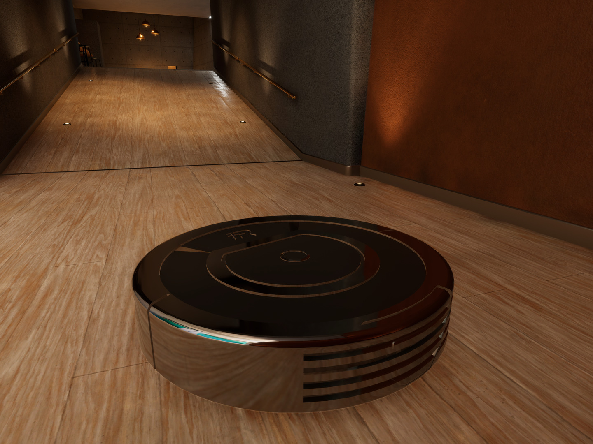
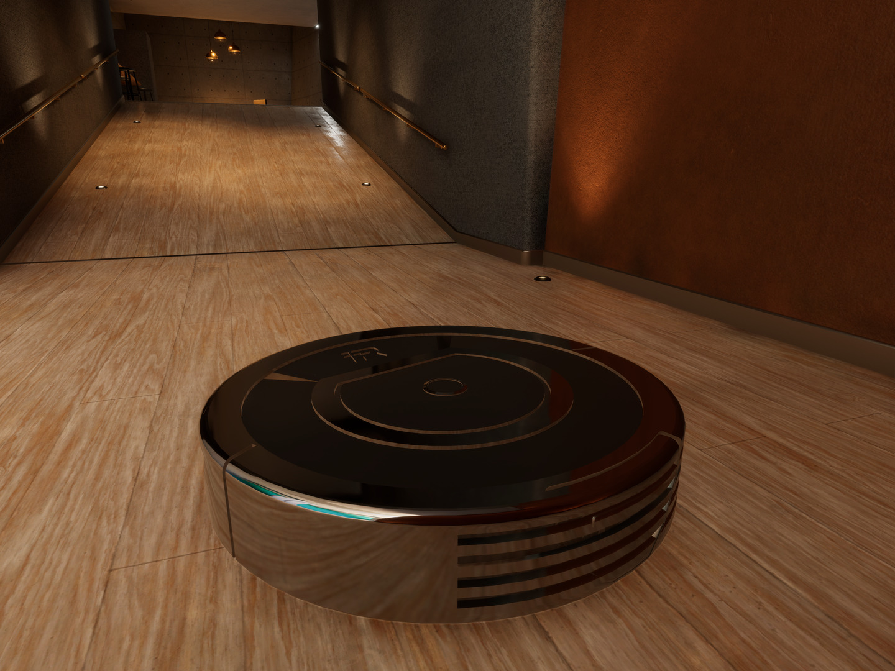

Detailed Feature List
Automatic Measurement Adjustment
Built-in sensors or a scanning system could measure the dimensions of garments, allowing precise tailoring
adjustments like hemming, taking in seams, or adjusting waistlines without needing manual measurements.
Customizable Fit Settings
Pre-programmed settings for common alterations (e.g., shortening sleeves, adjusting waist, hemming pants)
and the ability to save user preferences for future use would make it easy for users to tailor clothes to
their ideal fit.
Dry-Cleaning Function with Odor and Wrinkle Removal
A dry-cleaning compartment with steam cleaning and deodorizing capabilities would allow for freshening up
clothes, removing wrinkles, and neutralizing odors without chemicals, making it both convenient and
environmentally friendly.
Smart Fabric Recognition
Fabric recognition technology could identify the type of material and automatically adjust settings to
prevent damage, ensuring optimal tailoring and cleaning based on fabric type.
Portable and Compact Design
A foldable or compact design with carrying handles or a detachable case would make the device easy to
transport, so users can take it on business trips, vacations, or anywhere they need a quick refresh.
Digital Connection and App Integration
App connectivity would let users control the machine remotely, check alteration history, save fit
preferences, and get notifications when alterations or cleaning are complete.
Multi-Garment Capacity
The device could handle multiple garments at once, allowing users to tailor or clean several items, like a
suit set, in a single session.
Eco-Friendly Settings
Options for water-saving dry-cleaning cycles, energy-efficient tailoring functions, and environmentally safe
cleaning agents (if required) would make the device more sustainable.
Emergency Quick-Fix Mode
A “Quick Fix” mode would allow for rapid hemming or cleaning in minutes for those times when users need an
urgent adjustment or refresh before an important event.
HemEase Pro: Touchscreen Interface with Guided Instructions
An intuitive touchscreen would guide users step-by-step, making it accessible to everyone, even those with
no tailoring experience. Digital tutorials or prompts could simplify each adjustment or cleaning function.
 
